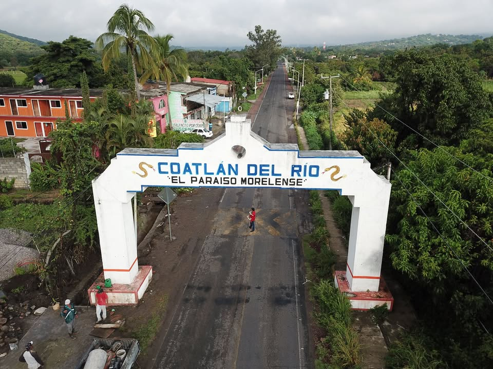
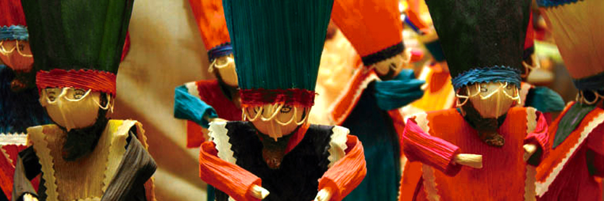
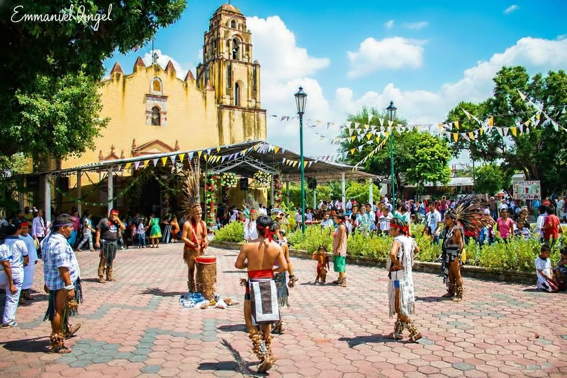
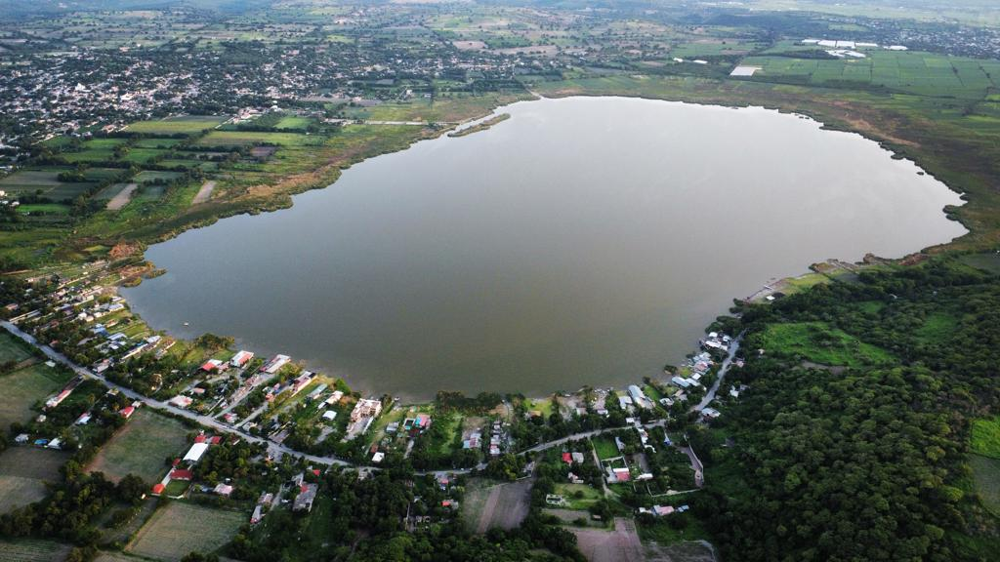
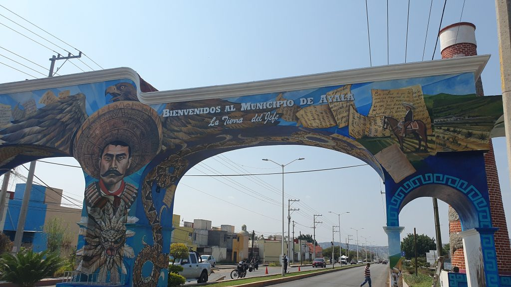
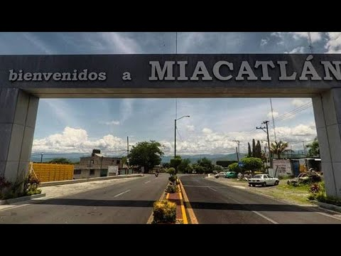
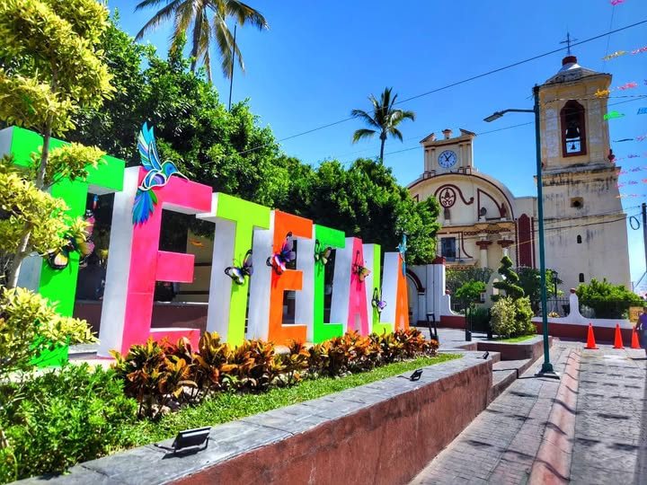

Proyecto Escolar
Fray Luca Paccioli
Fray Luca Paccioli




Desarrollo de páginas web, bases de datos y aplicaciones que permiten gestionar información de forma eficiente. En este proyecto, los alumnos de Informática diseñaron la estructura digital, la interfaz de usuario y la lógica de navegación para mostrar las 7 regiones de Morelos.
Los estudiantes de Diseño Gráfico se encargaron de la identidad visual del proyecto, creando el logotipo, la paleta de colores y las ilustraciones de cada región. Además, desarrollaron material promocional como infografías y carteles digitales para exponer la riqueza cultural de las 7 regiones de Morelos.
El equipo de Turismo investigó los atractivos naturales y culturales de las 7 regiones. Desde los balnearios de Amacuzac, la laguna de Coatetelco, hasta el ex convento de Tetecala. Crearon una guía turística interactiva para promover el ecoturismo y la economía local de estos municipios morelenses.
Estas son las 7 regiones que los alumnos de 6° Semestre trabajaron en su proyecto final.
Cada región representa la riqueza cultural, económica y turística del estado de Morelos.
Región conocida por su producción agrícola y su cercanía con los límites de Guerrero. Destaca por el cultivo de maíz, frijol y la ganadería. Su nombre significa "Lugar donde hay víboras".
📍 Zona surponiente de Morelos
Región famosa por sus balnearios y ríos ideales para el turismo de aventura. El río Amacuzac es uno de los más importantes para la práctica de deportes acuáticos y pesca deportiva.
📍 Zona sur de Morelos
Es reconocida por su historia revolucionaria, siendo la cuna del general Emiliano Zapata y cuna del Plan de Ayala. En términos de industria y comunicaciones, destaca por albergar el Parque Industrial Cuautla (PIC) y por estar conectada a vías rápidas que unen la región oriente con el resto del estado
📍 Zona oriente de MorelosRegión arqueológica y turística. Alberga la Laguna de Coatetelco y la zona arqueológica del mismo nombre, con vestigios de la cultura Tlahuica. Ideal para el ecoturismo.
📍 Zona surponiente de MorelosRegión indígena con una rica tradición cultural. Sus habitantes conservan usos y costumbres, y es conocida por sus artesanías y la elaboración de productos tradicionales como el mezcal.
📍 Zona sur de Morelos
Región histórica con importantes zonas arqueológicas. Es conocida por sus ceremonias tradicionales, su gastronomía y la elaboración de mezcal artesanal de alta calidad.
📍 Zona surponiente de Morelos
Región con gran riqueza arquitectónica colonial. Destaca su ex convento franciscano del siglo XVI y sus tradiciones religiosas. También es conocida por su producción de flores y frutas tropicales.
📍 Zona surponiente de Morelos
Artesanías de Madera - Tlaltizapán

Mezcal de Palpan - Miacatlán

Tallado de Pochote y Cerámica - Tepoztlán

Pintura Óleo y Acrílico - Jantetelco

Souvenirs de Paisajes - Xochitepec

Licor de Caña y Café - Zacualpan de Amilpas

Figuras de Totomuxtle - Cuautla

Músico - Jiutepec